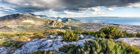
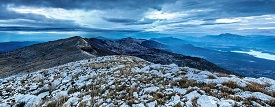

Cetina
Cetina izvire na nadmorskoj visini od 385 m u sjeverozapadnim obroncima Dinare
blizu sela Cetina, 7 km sjeverno od Vrlike, a po kojem je rijeka i dobila ime.
Izvor Cetine je jezero duboko preko stotinu metara.
Blizu Vrlike se nalazi Peručko jezero, umjetno stvoreno branom na Cetini 25 km
nizvodno. Nakon jezera rijeka prolazi krškim područjem i Sinjskim poljem prema
gradu Sinju. Cetina pod Gardunom, kod grada Trilja, napušta Sinjsko polje, ulazi
u kanjon te teče prema jugu. Nad kanjonom je utvrda Nutjak. Obale su u kanjonu
bliže i više, a rijeka duboka i spora. Nekad je voda brzo tekla i okretala brojne mlinove,
ali su je brane usporile.

Kozjak
Kozjak je planina koja sa sjeverne strane okružuje grad Kaštela.
Njegova je južna padina vrlo strma i klisurasta, a sjeverni kameniti
obronci postupno prelaze u valovitu visoravan Dalmatinske Zagore.
To je u hrvatskom planinarstvu najpoznatije popularno značenje naziva Kozjak,
za razliku od manje poznatog ali znatno višega Velikog Kozjaka iznad Kijeva u Dalmatinskoj Zagori,
1207 m.
Najupečatljiviji dio Kozjaka je južna stijena (16 km), koja je ujedno najduža u Hrvatskoj,
mada razmjerno male visine (50 – 250 m).

Primošten
Tijekom turske invazije 1542., otočić na kojemu se nalazi Primošten je
bio zaštićen zidovima i kulama i sa pomičnim mostom koji ga je spajao
s kopnom. Kad su se Turci povukli, most je zamijenjen nasipom, a naselje
je nazvano "Primošten", od riječi "primostiti" (premostiti).
Primošten je poznat po svojim velikim i predivnim vinogradima.
Fotografija jednog od primoštenskih vinograda visi na zidu zgrade
središta UN-a u New Yorku. Razmatra se uvrštenje vinograda u UNESCO-v popis baštine.
Najveća plaža u Primoštenu je Raduča, a postoji i Mala Raduča, koja je izabrana
za jednu od 10 najljepših plaža u Hrvatskoj.
Katedrala
Katedrala Sv. Jakova u Šibeniku najznačajnije je graditeljsko ostvarenje
15. i 16. st. na tlu Hrvatske. Zbog svojih iznimnih vrijednosti katedrala je
2000. godine uvrštena u UNESCO-ov popis svjetskog kulturnog nasljeđa.
Gradnja nove katedrale simbolički je bila kulminacija višestoljetnog stremljenja grada,
da se odvoji od trogirske biskupije te da i uz vlastitu crkvu stekne i komunalnu autonomiju.
Podignuta je na južnoj strani središnjeg starog gradskog trga, na mjestu romaničke crkve sv. Jakova.
Ideja o gradnji velikog katedralnog hrama datira od 1298. godine. kada je Šibenik dobio vlastitu
biskupiju i naslov grada. Odluka o gradnji i početku pripremnih radova donesena je 1402. godine.
Gradnja je međutim, započela tek 1431. godine i trajala uz prekide do 1536. godine.

Svilaja
Svilaja je planina u Dalmatinskoj Zagori, usporedna s višim sjevernijim
lancem Dinara-Troglav. Pruža se smjerom sjeverozapad-jugoistok između Sinjskoga
i Petrovog polja u dužini oko 30 km.
Najviši je južni vrh Svilaje (Bat) 1508 m iznad Sinja. Sjevernije su još važniji
vrhovi Jančak 1483 m, Kita 1413 m, Turjača 1340 m , Mala Svilaja 1472 m i Lisina 1301 m
iznad Vrlike. Od najbližeg grebena Veliki Kozjak (1207 m) koji je sjeverni nastavak Svilaje,
ova je odvojena nižim sedlom Lemeš (860 m) iznad sela Maovice. Najveći dio lanca Svilaje
je krški greben s naizmjeničnim nizom vrhova i ponikava (vrtača), te više krških jama i špilja.